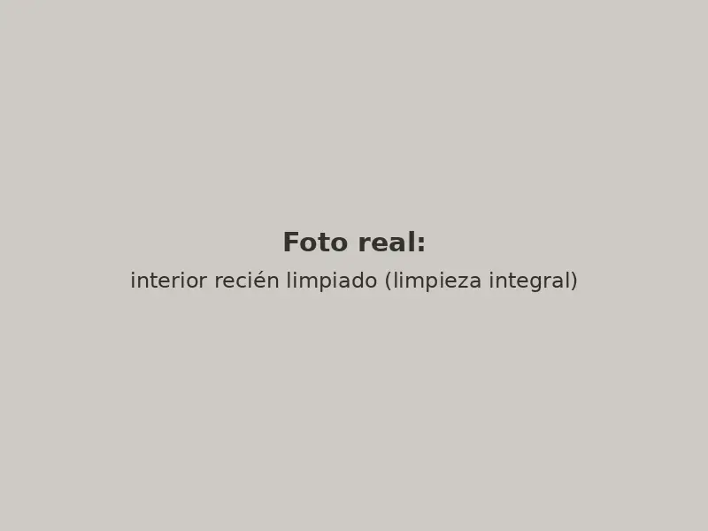
Limpieza integral
Desde una limpieza de mantenimiento para tenerlo al día hasta un detailing a fondo, por dentro y por fuera. Nos cuentas cómo usas el coche y te proponemos lo que tiene sentido.
Desde X €
Reservar este servicio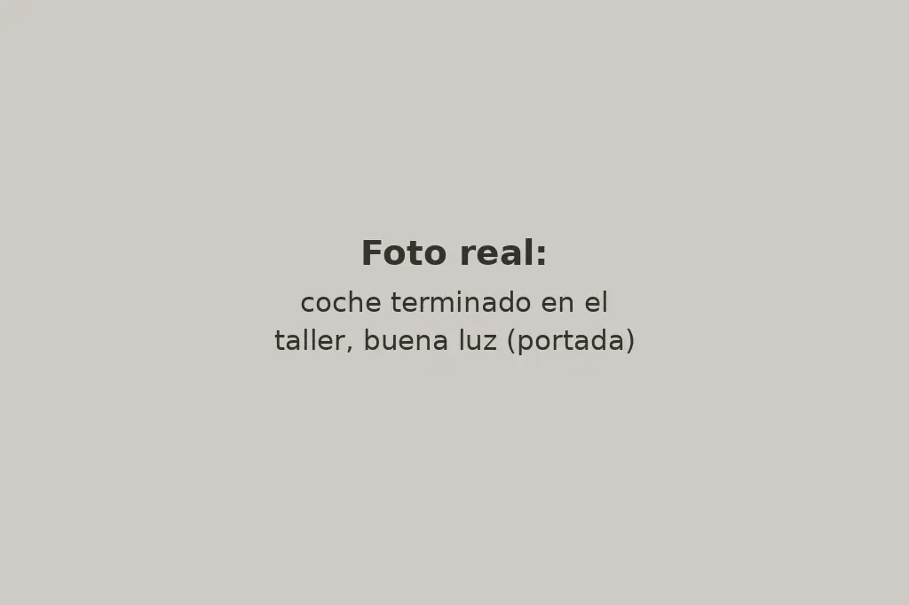
Somos Garbicar, un taller en la Carretera de Trescasas. Mándanos una foto de tu coche por WhatsApp y te decimos qué se puede hacer y cuánto costaría.
Llevamos cinco años trabajando en Segovia. En este tiempo han pasado por el taller más de 2.000 coches de más de 1.500 clientes: desde una limpieza de mantenimiento hasta un pulido completo o un techo que se había descolgado.
Todas las fotos que ves aquí son de coches que hemos tratado nosotros.
Así queda un faro amarillento después de pasar por el taller. Baja despacio y lo verás paso a paso.
Seis trabajos que hacemos a diario. Si no sabes cuál necesitas, mándanos una foto y te lo decimos.

Desde una limpieza de mantenimiento para tenerlo al día hasta un detailing a fondo, por dentro y por fuera. Nos cuentas cómo usas el coche y te proponemos lo que tiene sentido.
Desde X €
Reservar este servicio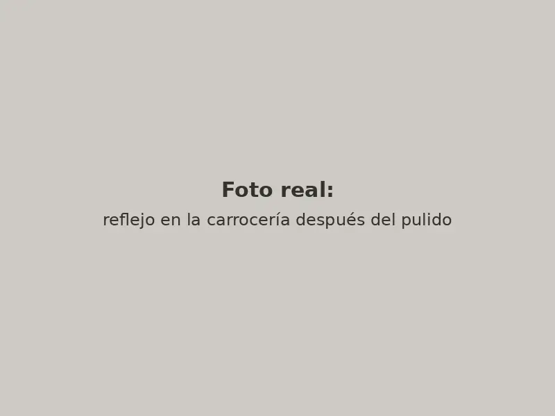
Quitamos las marcas que dejan los lavados y los micro-arañazos que se ven en cuanto le da el sol.
Desde X €
Reservar este servicio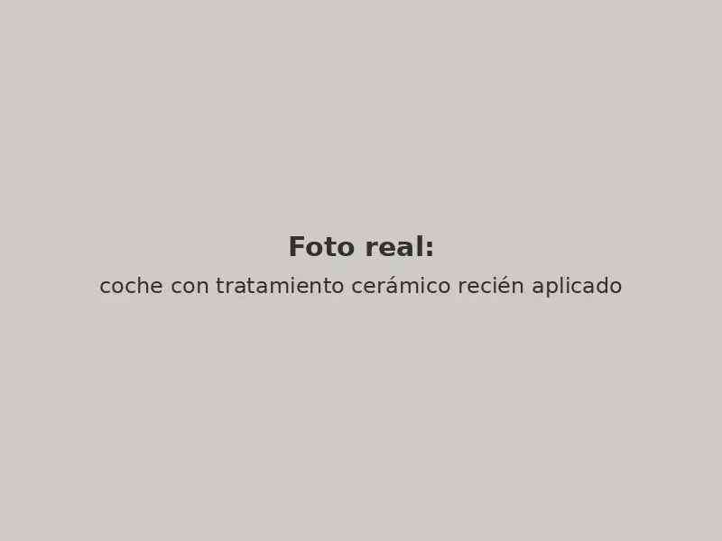
Una capa que protege la pintura hasta 7 años o 100.000 km. Trabajamos con las mejores marcas del mercado.
Desde X €
Reservar este servicioLos faros amarillos u opacos alumbran menos y hacen el coche más viejo. Los pulimos y los dejamos acabados con polímero líquido o con laca: lo eliges tú.
Desde X €
Reservar este servicio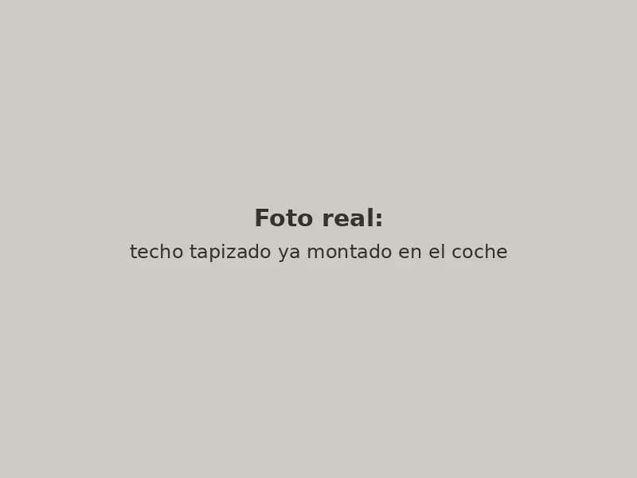
Si se te ha descolgado el techo, lo volvemos a tapizar. Y si quieres cambiarle el color, también.
Desde X €
Reservar este servicio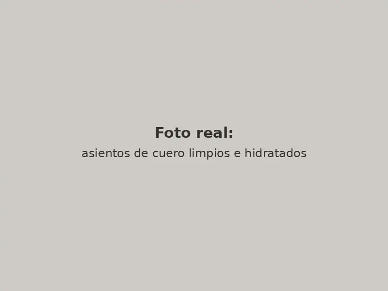
Limpiamos y desinfectamos la tapicería. El cuero, además, lo protegemos y lo hidratamos.
Desde X €
Reservar este servicioArrastra la barra (o usa las flechas del teclado) para comparar. Mismo coche, mismo sitio, antes y después de pasar por el taller.

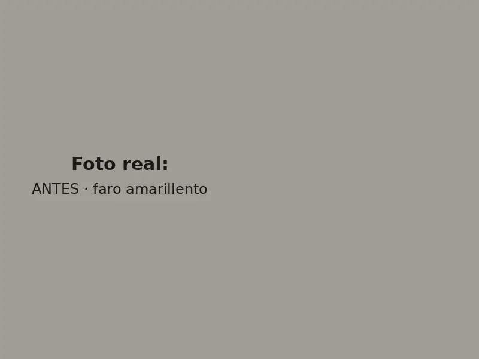

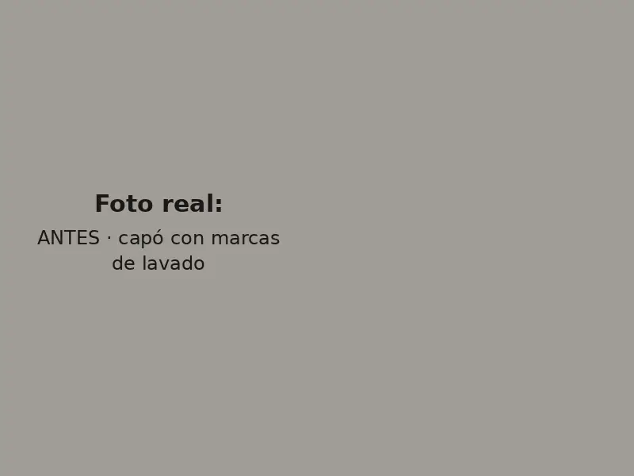

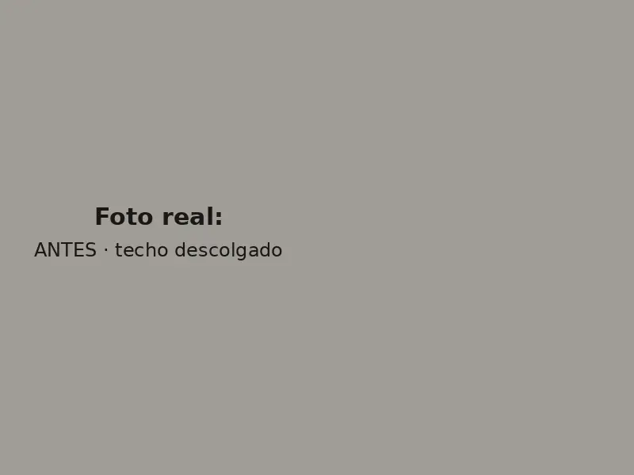


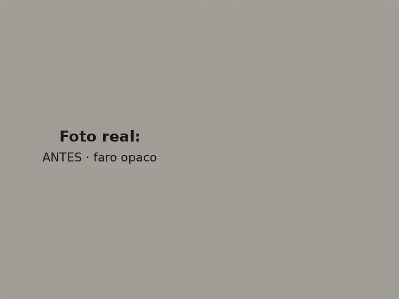
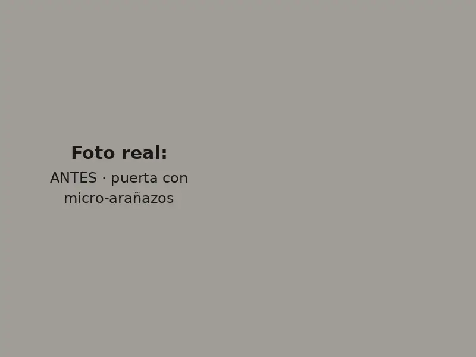
Pendiente: aquí irán reseñas reales copiadas de la ficha de Google de Garbicar, con el nombre de pila de cada cliente y un enlace a la reseña original. No se publicará ninguna que no esté en Google.
Más trabajos, según los vamos terminando, en @garbicar_segovia.
Rellena esto y se abrirá WhatsApp con el mensaje ya escrito. Solo tienes que darle a enviar y te contestamos para cerrar el día.
| Lunes a viernes | 9:00 – 13:30 16:00 – 18:30 |
|---|---|
| Sábado y domingo | Cerrado |
Horario pendiente de confirmar